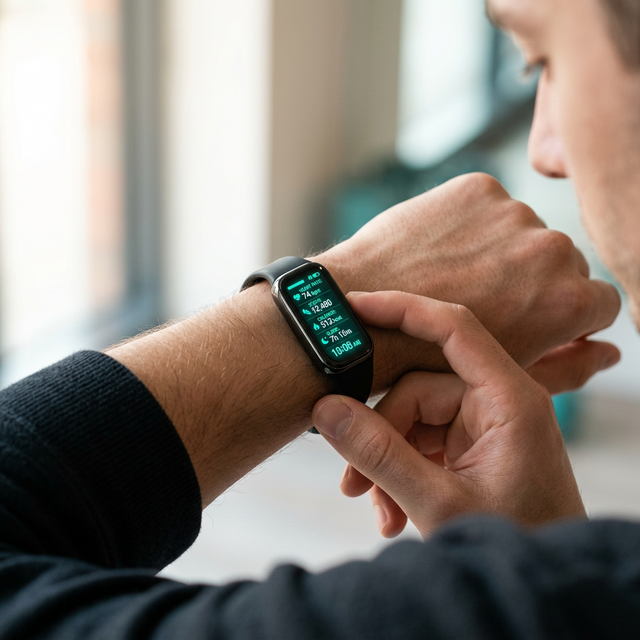
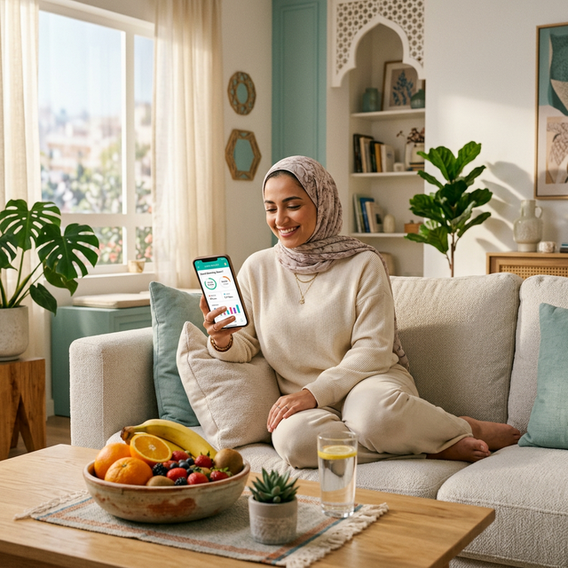

يقوم النظام بتحليل هذه البيانات باستخدام تقنيات الذكاء الاصطناعي لإعطاء تقارير ومؤشرات تساعد المستخدم على فهم حالته الصحية بشكل أفضل واتخاذ قرارات صحية مبكرة.

اربط سوار صحتك وراقب معدل ضربات قلبك ونشاطك اليومي بدقة عالية في الوقت الفعلي.

احصل على تقارير وإحصاءات دقيقة عن نمط حياتك ونشاطك وصحتك العامة كل يوم.